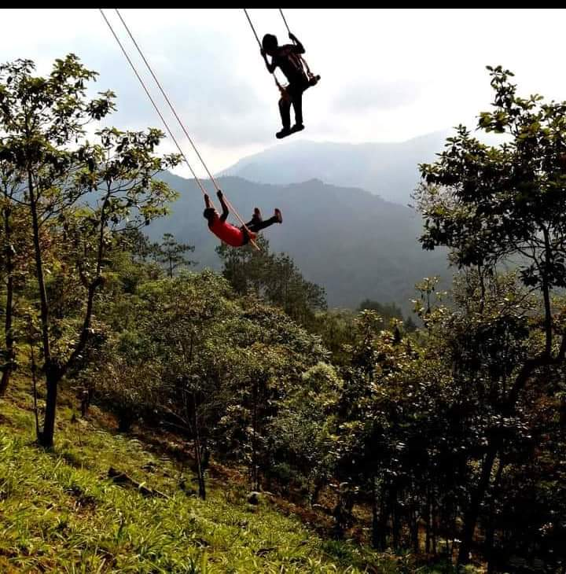
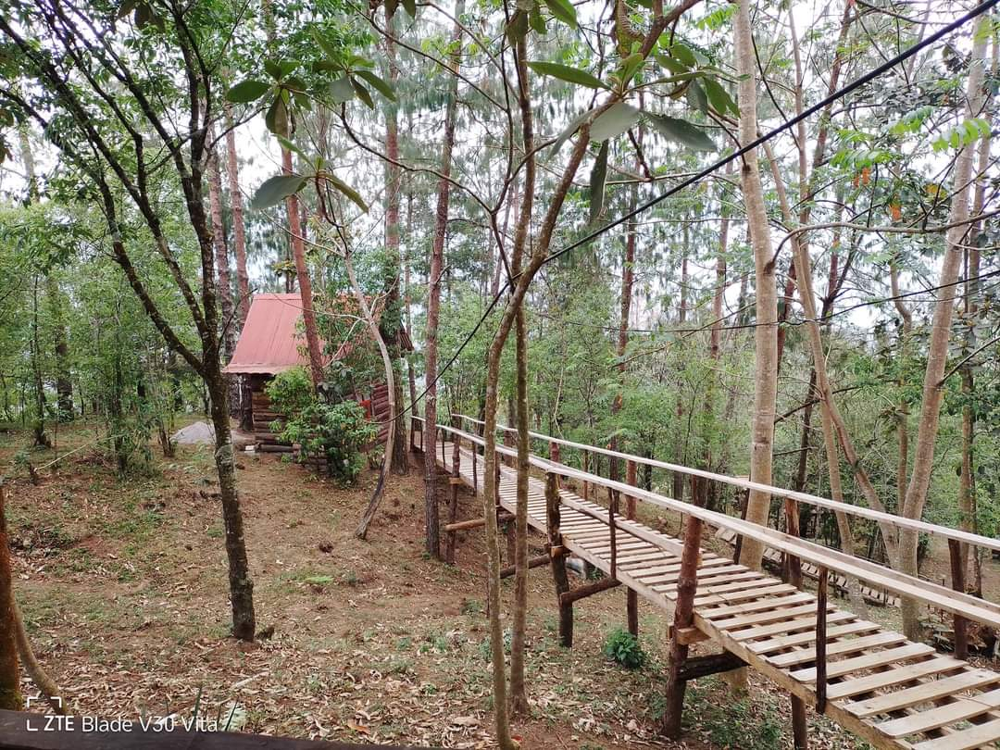
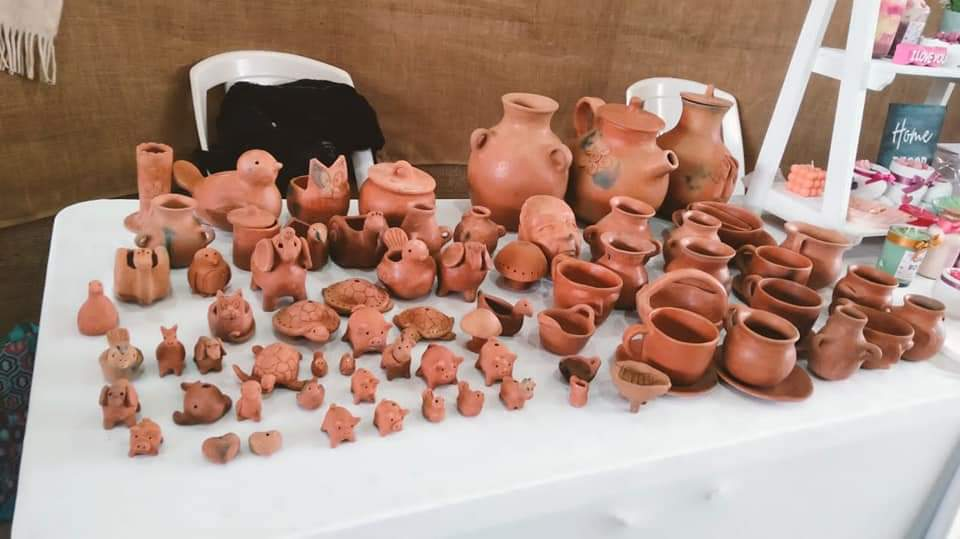
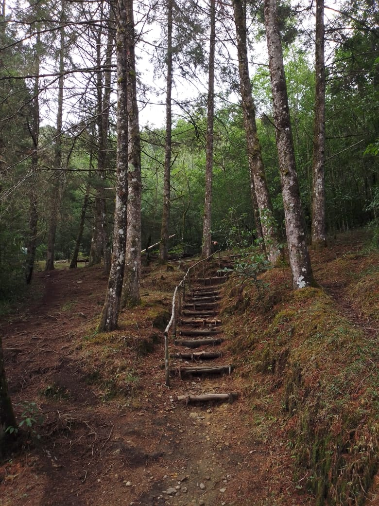
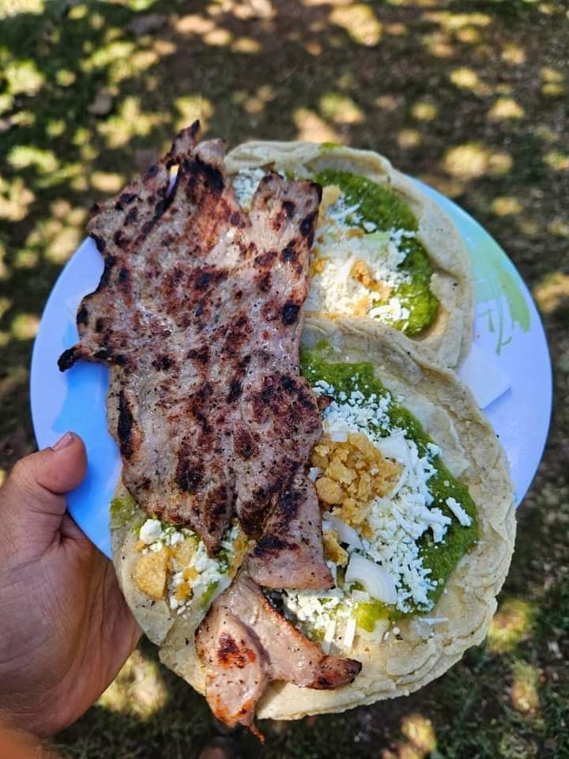

Area de juegos ecologicos
Conoce y disfuta de la gran varieadad de juegos instalados en el lugar son instalados para todo el publico desde columpios asta miradores

Arquitectura Colonial
Admira las calles empedradas, las casas con balcones floridos y la arquitectura colonial de Tequilatlakpan.

Tradiciones Indígenas
Descubre las tradiciones indígenas de la región y disfruta de su música, danza y artesanía.

Ecoturismo
Realiza actividades de ecoturismo en las montañas y disfruta de la naturaleza.

Gastronomía
Prueba la deliciosa gastronomía local, con platillos típicos y productos frescos.